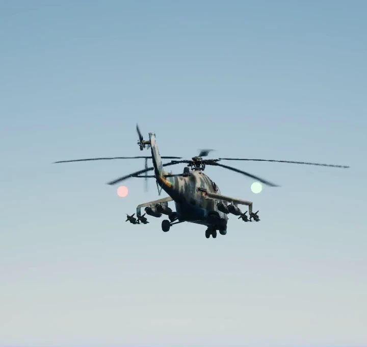
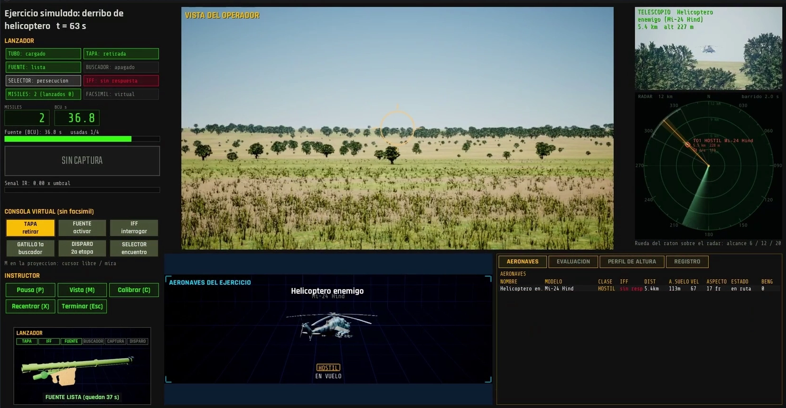
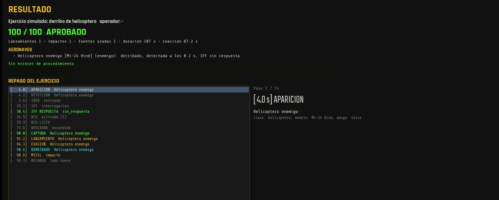
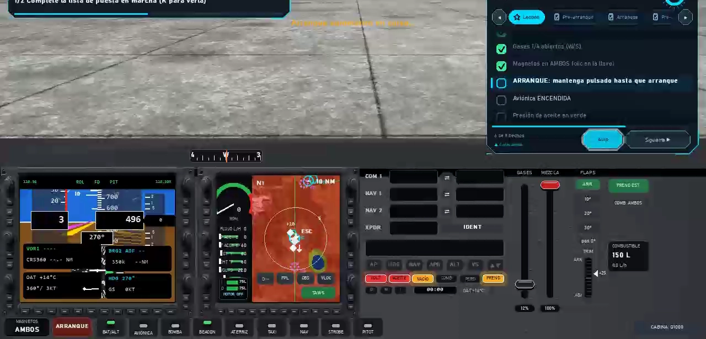
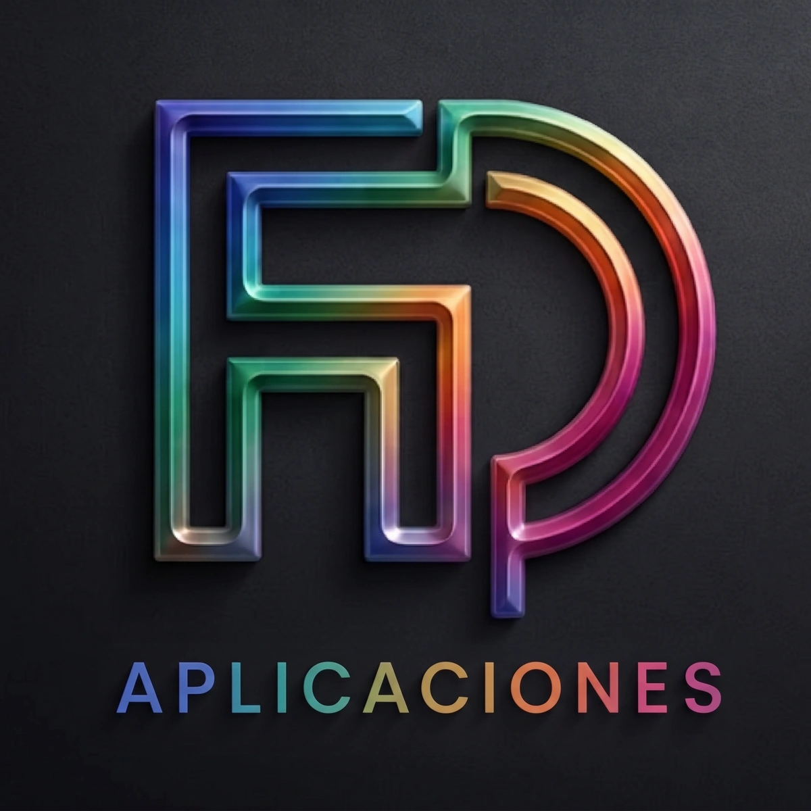
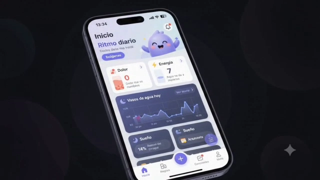

Desarrollo web y móvil
Sistemas web, backend, bases de datos y aplicaciones móviles a la medida.

Ya seas una institución pública, una organización de mantenimiento o una empresa, tenemos la solución para que tu operación nunca se detenga.
Conoce todos nuestros serviciosSistemas web, backend, bases de datos y aplicaciones móviles a la medida.
Asistentes, búsqueda en manuales y voz, sin enviar tus datos a la nube.

Simuladores de vuelo, de tiro y de entrenamiento con instructor y evaluación automática.

Flota, inventario, órdenes de trabajo, vencimientos y compras.

Software para equipos dedicados que funcionan de forma autónoma.
Despliegue en sitio, capacitación y atención post-venta bajo SLA.
Algunos de los desarrollos que hemos construido de principio a fin.
Para organizaciones de mantenimiento, escuelas de vuelo y operadores de cualquier fabricante y modelo. Aplicación de escritorio con app móvil por la red local, 100 % sin nube.
Conoce SIGMA MRO


Entrenamiento de tiro antiaéreo en escenarios 3D realistas, de día, de noche y con mal tiempo, sin gastar munición real. El tirador practica la secuencia completa mientras el instructor sigue cada ejercicio desde su consola.
Conoce el simulador antiaéreo

Lleva el entrenamiento real a tu escuela en una computadora común: física de seis grados de libertad validada contra el manual del fabricante, instructor virtual que guía cada lección, emergencias sin riesgo, navegación GPS con aproximaciones RNAV e ILS, y aeropuertos reales de Venezuela con su terreno e imagen satelital.
Al final, una evaluación con las gráficas del vuelo y un informe para el alumno y el instructor.
Conoce AeroEscuela
Simulador de operaciones por turnos para el aula: los alumnos integran un Estado Mayor en dos bandos, planifican y conducen la campaña sobre mapas reales, con adversario automático y evaluación final.
Conoce el simuladorProceso automatizado que convierte datos abiertos (OpenStreetMap, relieve satelital e imágenes Sentinel-2) en escenarios realistas de Caracas en Unreal Engine 5, para recorrer a pie, en vehículo y en vuelo.
Ver los escenarios 3DSimulador para controladores con trazas de radar, identificación de vuelos y comunicaciones por voz con IA local, puesto de instructor y evaluación. Funciona completamente sin internet.
Por confidencialidad no publicamos capturas de este proyecto.
Conoce el simuladorFDP Simuladores · Simulador de tiro con láser
Convierte cualquier sala con un proyector en un polígono de entrenamiento: arma láser, proyección a tamaño real y escenarios tácticos en 3D, dirigidos desde la consola del instructor.
Imágenes reales del simulador. Cada escenario mide puntos, tiempos de reacción y faltas.
Diana de anillos a 10 metros, impactos en tiempo real y diana de ayuda en pantalla.
Siluetas que se acercan y se alejan; cada impacto se puntúa por zona.
Enemigos que se cubren, se asoman y disparan desde una azotea.
Blancos en movimiento entre carros y barricadas: reacción y puntería.
Habitación por habitación: los rehenes no se tocan y huyen al ser liberados.
Las amenazas devuelven el fuego: la cobertura cuenta. Al final, los resultados.

Con FDP Aplicaciones creamos juegos y apps móviles hechos en Venezuela para el mundo.
Más sobre nuestras apps
Juego de burbujas con poderes especiales (varita, revolver, cohete, martillo, bomba y rayo), retos por niveles y premios.
Buscar en Google Play
Billar, carrom, ludo y más juegos clásicos en una sola app, con tableros y estilos para personalizar.
Buscar en Google Play
Tu diario de salud: registra dolor, energía, sueño, agua y tus tratamientos, y mira tu evolución en gráficas.
Buscar en Google PlayTrabajamos donde la seguridad, la disponibilidad y la independencia tecnológica son críticas.
Control de flota, componentes, programa de mantenimiento, órdenes de trabajo, inventario y directivas, con alertas antes de cada vencimiento.
Simuladores de tiro, de entrenamiento y sistemas que operan en redes aisladas, con datos que nunca salen de la institución.
Sistemas de gestión, trámites y control documental que funcionan aun con conectividad limitada.
Control de equipos, repuestos y órdenes de trabajo, con sistemas embebidos para equipos dedicados.
Aplicaciones web y móviles a medida, automatización de procesos y asistentes de IA sobre tus propios documentos.
Juegos y apps móviles publicados en Google Play, páginas web y experiencias 3D interactivas.
“Optimizamos los procesos críticos de nuestros clientes para garantizar su independencia tecnológica y su eficiencia operativa.”
Ingeniería rigurosa, trabajo híbrido (presencial y remoto) y despliegue en tus instalaciones.
Analizamos tus procesos críticos y definimos la arquitectura, el alcance, los tiempos y el costo.
Construimos por etapas, con pruebas, documentación y control de versiones en cada entrega.
Desplegamos en tu sitio, capacitamos a tu equipo y damos soporte post-venta bajo SLA.
FDP SOFTWARE es una empresa venezolana dedicada al desarrollo, mantenimiento y distribución de software digital de alta gama, especializada en soluciones seguras y operables sin conexión a internet.
Ser para el año 2031 la empresa de software de referencia en Venezuela y la región en soluciones críticas, sistemas offline con inteligencia artificial y simulación, reconocida por la calidad, seguridad y durabilidad de sus productos.
Sistemas de gestión, mantenimiento y logística con IA local, que funcionan sin internet.
Proyectos de FDP Software
Simuladores de vuelo, de tiro, de entrenamiento táctico y escenarios 3D realistas.
Proyectos de FDP Simuladores
AeroEscuela
Simulador de entrenamiento de vuelo.
 SIMAK
Simulador de tiro con láser.
Tiro antiaéreo
De la detección al impacto.
Entrenamiento táctico
Planifica y conduce la campaña sobre mapas reales.
Escenarios 3D
Caracas en 3D, con datos reales.
Control aéreo
Simulador de control e interceptación aérea.
SIMAK
Simulador de tiro con láser.
Tiro antiaéreo
De la detección al impacto.
Entrenamiento táctico
Planifica y conduce la campaña sobre mapas reales.
Escenarios 3D
Caracas en 3D, con datos reales.
Control aéreo
Simulador de control e interceptación aérea.
Juegos y apps móviles como Marcelo Go y Ritmo Diario, y aplicaciones web para empresas.
Somos un equipo de ingenieros profesionales con experiencia en desarrollo de software aeronáutico, simulación y entrenamiento, inteligencia artificial local, sistemas embebidos y aplicaciones web y móviles.
Estrategia, arquitectura técnica y relación con clientes.
Sistemas web, backend, bases de datos y aplicaciones móviles.
Asistentes inteligentes, búsqueda documental y modelos de IA locales.
Pruebas, documentación y control de versiones.
Despliegue, mantenimiento y atención post-venta bajo SLA.
Agenda una demostración o una reunión para conversar sobre tu proceso crítico.
República Bolivariana de Venezuela · Atención presencial y remota